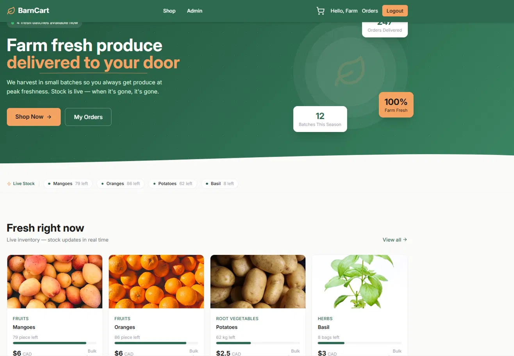
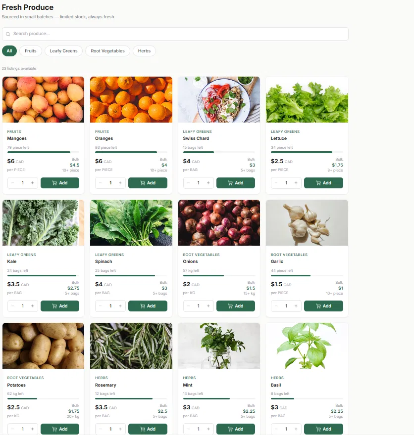
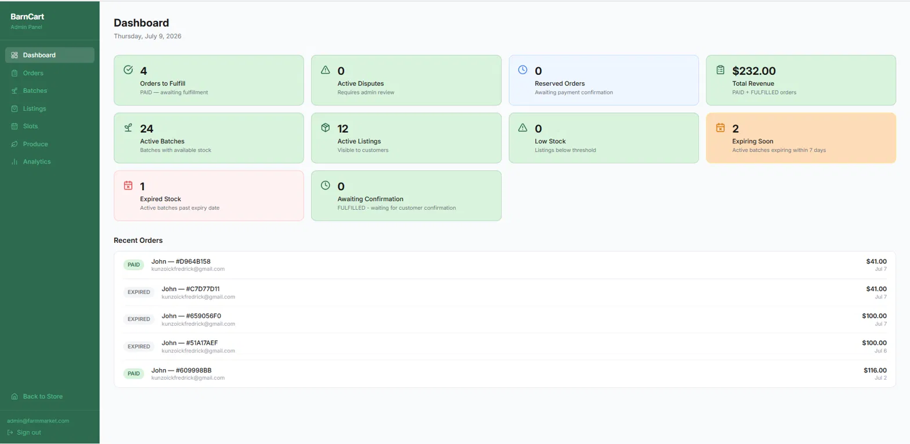
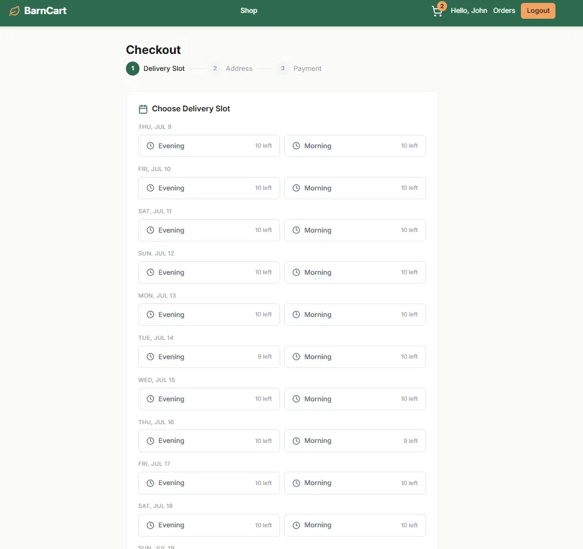

I build systems I can still explain months later — the decision, the tradeoff, the place it's most likely to break first.
Most of the value in a system is in the parts nobody sees — why one approach was rejected, what the failure path does, where the known limits are. That gets written down before the sprint ends, not after someone asks.
Java 17–23, Spring Boot, Spring Security, JWT, Flyway, transactional design
MySQL, MariaDB, Redis, RabbitMQ, Testcontainers for real integration tests
React, Tailwind CSS — enough to ship a working customer-facing app end to end
ADRs before code, bug logs with root cause, CI on every push, Docker deploys
Not a highlight reel — each one has a document explaining what was decided, what was rejected, and what's still not solved.
Farm-to-customer e-commerce, built and deployed end to end — auth, live inventory, Stripe checkout, delivery scheduling, disputes, an admin panel. Frontend and backend are separate repos, both deployed.




- Multi-item orders only ever saved the last item — no exception, nothing in the logs
- Root cause was a cache-clearing query silently wiping unflushed inserts mid-loop
+ Confirmed with a direct DB query, not app logs — COUNT(*) told the real story
+ Fixed the flush, then traced the same bad assumption into six other call sites
Contract-first multi-tenant REST API. The core bet: tenant isolation shouldn't depend on anyone remembering a WHERE clause.
- A single missed tenant filter in any repository method leaks data across tenants
+ Tenant scope enforced structurally in a base repository — no query path can skip it
+ JWT revocation via Redis JTI blacklist, with refresh token reuse detection
A REST API where every request is judged on two separate axes — who the user is, and how trustworthy their recent behavior has been.
- Role and trust score must never be allowed to mix — that boundary is the whole design
+ Stateless JWT with reuse detection — a stolen token revokes its entire family, atomically
+ Redis-backed rate limiting fails open, so an outage never locks out a real user
Consumes the events the Trust API publishes. The interesting part isn't the happy path — it's what happens when a message fails halfway through.
- Retries, dead letters, duplicate delivery, records stuck mid-processing
+ Outbox on the producer side, idempotency on the consumer side
+ A watchdog process that finds and recovers anything stuck
A symbolic math engine behind five HTTP endpoints — differentiation, integration, implicit differentiation. No math library underneath any of it.
- No external symbolic math library — the engine had to be written from scratch
+ Hand-written tokenizer, parser, AST, differentiator, integrator, simplifier, printer
+ Zero Spring dependency in the engine itself — fully testable on its own
A layered desktop app for a multi-admin institution. No Spring, no ORM — everything wired by hand, mostly to see what those frameworks are usually doing for you.
- 15 critical and 8 high-severity issues found in a full pass over the codebase
+ Every issue written up with its root cause, not just patched and forgotten
+ SwingWorker contract enforced across 20 frames so the UI thread never blocks
The decisions that shaped the architecture above, and the bugs that needed a root cause, not just a patch.
Open to backend roles, or just talking through a system design. Email is the most reliable way to reach me.